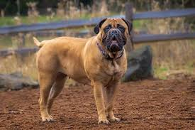
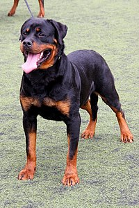
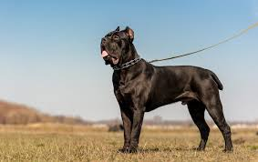
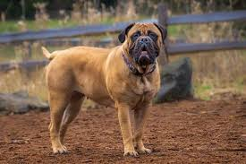
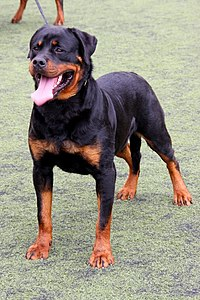
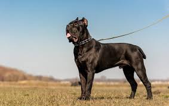

O Cane Corso é uma raça de cão grande e poderosa, originária da Itália, onde foi historicamente utilizada como cão de guarda, cão de trabalho e até mesmo para caça de javalis. Conhecido por sua lealdade, inteligência e instinto protetor, o Cane Corso é uma escolha popular para quem busca um cão de guarda confiável e um companheiro devotado.
Características do Cane Corso
Aparência
➜ O Cane Corso tem uma presença imponente, com um corpo musculoso e atlético. Sua cabeça é grande e larga, com mandíbulas fortes e uma expressão alerta e confiante. A pelagem é curta e densa, e pode variar em cores como preto, cinza, fulvo, vermelho, e tigrado.
Temperamento
➜ O Cane Corso é conhecido por seu temperamento equilibrado e calmo, mas também por sua coragem e determinação. Eles são extremamente leais à sua família e têm um forte instinto de proteção. Embora sejam desconfiados de estranhos, são geralmente afetuosos e gentis com os membros da família.
Instinto Protetor
➜ O Cane Corso tem um instinto protetor muito forte, o que o torna um excelente cão de guarda. Eles são naturalmente desconfiados de pessoas que não conhecem e podem ser altamente territoriais, defendendo sua família e propriedade com determinação.
Inteligência e Treinabilidade
➜ Esta raça é altamente inteligente e responde bem ao treinamento. Eles são rápidos para aprender comandos e se beneficiam de uma liderança firme e consistente. Devido à sua natureza protetora, é importante que o Cane Corso seja bem treinado e socializado desde filhote para garantir que se comporte adequadamente em diversas situações.
Energia e Exercício
➜ O Cane Corso é uma raça ativa que requer exercícios regulares para manter sua saúde física e mental. Caminhadas diárias, brincadeiras e desafios mentais são importantes para mantê-los felizes e equilibrados. Apesar de seu tamanho, eles são surpreendentemente ágeis e gostam de atividades que envolvem movimento.
Socialização
➜ A socialização precoce é crucial para o Cane Corso, especialmente para garantir que ele interaja bem com outros cães e pessoas. Um Cane Corso bem socializado pode ser amigável e seguro em diferentes ambientes, embora sempre mantenha seu instinto protetor.
Ajuste familiar
O Cane Corso pode ser um excelente cão de família, especialmente em lares onde ele pode receber o treinamento e a liderança que necessita. Eles formam laços profundos com seus donos e são conhecidos por serem protetores e carinhosos com crianças. No entanto, devido ao seu tamanho e força, eles são mais adequados para famílias que tenham experiência com cães grandes e que possam proporcionar o exercício e a socialização necessários.
Considerações de saúde
Como outras raças grandes, o Cane Corso pode ser propenso a alguns problemas de saúde, como displasia de quadril e cotovelo, problemas cardíacos, e torção gástrica. É importante escolher um criador responsável que faça exames de saúde nos pais dos filhotes e fornecer cuidados veterinários regulares para manter o cão saudável.
Conclusão
O Cane Corso é uma raça imponente e leal, ideal para donos que procuram um cão de guarda protetor e um companheiro devotado. Com treinamento adequado, socialização e cuidados, o Cane Corso pode ser um membro valioso e protetor da família, combinando força e inteligência com um profundo senso de lealdade e afeto.
 




